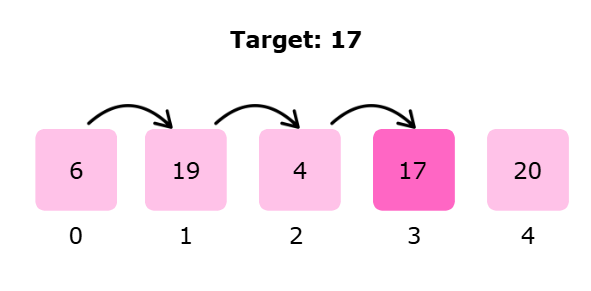
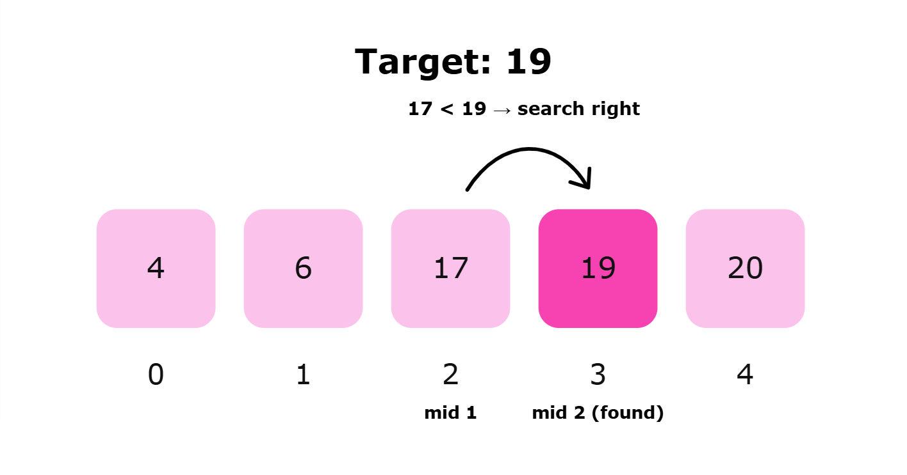
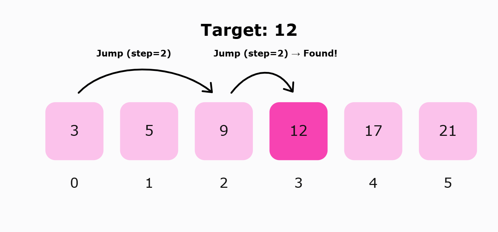
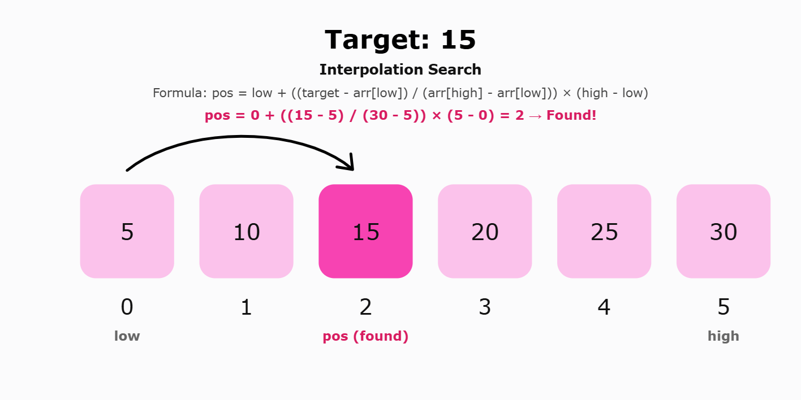

1) Linear search
Simplest Algorithm. Checks each item in order until it finds the target. Very slow when the dataset is long.
Methods to find elements in a list
Search algorithms are used to locate a specific element within a dataset. They are crucial for problem solving and data processing. It takes a list or array along with a target and systematically goes through to find whether the target exists in the given dataset and also find its location.

Simplest Algorithm. Checks each item in order until it finds the target. Very slow when the dataset is long.

Fastest algorithm to find item in an already sorted list. Splits the list in half repeatedly until target value is found.

Skips ahead in fixed blocks until you pass the target, then step back and check one by one. Also requires an already sorted list.

Calculates the probable location of the target and compares the value to the target. Works best on evenly spread, sorted data.